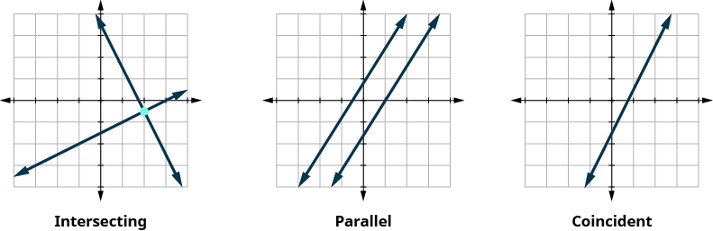

প্রাথমিক বীজগণিত ২য় সংস্করণ বইয়ে তোমাকে স্বাগত। এটি OpenStax-এর একটি শিক্ষাসামগ্রী। শিক্ষার্থীরা যাতে বিনা খরচে বা অতি সামান্য খরচে উচ্চমানের শিক্ষাসামগ্রী পায়, সেই উদ্দেশ্যেই এই পাঠ্যবইটি লেখা হয়েছে। বিষয়ের গভীরতা ও নির্ভুলতার ক্ষেত্রে সর্বোচ্চ শিক্ষাগত মান বজায় রাখা হয়েছে।
OpenStax সম্পর্কে
OpenStax হল Rice University-এর একটি অংশ। Rice University একটি 501(c)(3) ধারার অধীনে নিবন্ধিত অলাভজনক দাতব্য সংস্থা। অসাধারণ শিক্ষার সুযোগ সবার কাছে পৌঁছে দেওয়াই আমাদের লক্ষ্য। দাতব্য সংস্থাগুলির সঙ্গে অংশীদারিত্ব এবং অন্যান্য শিক্ষাসামগ্রী প্রস্তুতকারী সংস্থার সঙ্গে সহযোগিতার মাধ্যমে আমরা শেখার পথে সবচেয়ে সাধারণ বাধাগুলি দূর করছি। কারণ আমরা বিশ্বাস করি, জ্ঞান লাভের সুযোগ প্রত্যেকের পাওয়া উচিত এবং তা সম্ভব।
OpenStax-এর শিক্ষাসামগ্রী সম্পর্কে
নিজের প্রয়োজনমতো সাজিয়ে নেওয়া
প্রাথমিক বীজগণিত ২য় সংস্করণ বইটি Creative Commons Attribution-NonCommercial-ShareAlike 4.0 (CC BY-NC-SA) লাইসেন্সের অধীনে প্রকাশিত। অর্থাৎ, অবাণিজ্যিক উদ্দেশ্যে এই বিষয়বস্তু বিতরণ করা, নতুনভাবে সাজানো এবং এর উপর ভিত্তি করে নতুন কাজ তৈরি করা যায়। তবে OpenStax এবং বিষয়বস্তুতে অবদানকারীদের যথাযথ স্বীকৃতি দিতে হবে এবং এর থেকে তৈরি সব কাজ একই লাইসেন্সে বিতরণ করতে হবে।
আমাদের বইগুলির উন্মুক্ত লাইসেন্স রয়েছে। তাই তুমি গোটা বইটি ব্যবহার করতে পারো, অথবা তোমার পাঠক্রমের প্রয়োজনের সঙ্গে সবচেয়ে বেশি মেলে এমন অংশগুলি বেছে নিতে পারো। শিক্ষকরা নিজেদের পছন্দের ক্রমে নির্দিষ্ট অধ্যায় ও অংশ পাঠ্যসূচিতে রেখে শিক্ষার্থীদের পড়তে দিতে পারেন। এমনকি পাঠ্যসূচিতে বইটির ওয়েব সংস্করণের নির্দিষ্ট অংশের সরাসরি লিঙ্কও দেওয়া যায়।
শিক্ষকরা চাইলে তাঁদের OpenStax বইয়ের প্রয়োজনমতো সাজানো একটি সংস্করণও তৈরি করতে পারেন। তাঁদের প্রতিষ্ঠানের বইয়ের দোকানের মাধ্যমে সেই সংস্করণটি স্বল্পমূল্যে ছাপা বা ডিজিটাল আকারে শিক্ষার্থীদের দেওয়া যেতে পারে। আরও জানতে openstax.org-এ বইটির পৃষ্ঠা দেখুন।
চিত্রের স্বীকৃতি: প্রাথমিক বীজগণিত ২য় সংস্করণ
প্রাথমিক বীজগণিত ২য় সংস্করণ বইয়ের অধিকাংশ চিত্রের নীচের বিবরণে চিত্রের শিরোনাম, স্রষ্টা বা স্বত্বাধিকারী, যে প্ল্যাটফর্মে তা রাখা হয়েছে এবং লাইসেন্সের স্বীকৃতি দেওয়া আছে। কিছু চিত্র বিশেষ অনুমতি নিয়ে ব্যবহার করা হয়েছে; সেগুলি ব্যবহারের সময় স্বীকৃতিতে দেওয়া শর্ত বা সীমাবদ্ধতা মেনে চলতে হবে। উন্মুক্ত লাইসেন্সে থাকা চিত্র অবাণিজ্যিক ব্যবহারকারী বা সংস্থা পুনরায় ব্যবহার করতে পারে, যদি মূল উৎসকে একইভাবে স্বীকৃতি দেওয়া হয়। (বাণিজ্যিক সংস্থাকে পুনর্ব্যবহারের অধিকার ও অনুমতি নিয়ে আলোচনা করতে OpenStax-এর সঙ্গে যোগাযোগ করতে হবে।) পড়ার সুবিধা এবং বিষয়ের ধারাবাহিকতা বজায় রাখতে কিছু চিত্রের স্বীকৃতি মূল লেখায় দেওয়া হয়নি। এই বই থেকে এমন কোনও চিত্র পুনরায় ব্যবহার করলে, যার স্বীকৃতি দেওয়া নেই, এই স্বীকৃতিটি ব্যবহার করুন: Copyright Rice University, OpenStax, under CC BY-NC-SA 4.0 license.
ভুল সংশোধন
OpenStax-এর সব পাঠ্যবই কঠোর পর্যালোচনার মধ্য দিয়ে যায়। তবুও অন্য যে কোনও পেশাদার মানের পাঠ্যবইয়ের মতো এখানেও কখনও ভুল থেকে যেতে পারে। আমাদের বইগুলি ওয়েবভিত্তিক হওয়ায় শিক্ষাগত প্রয়োজনে সময়ে সময়ে সংশোধন করা যায়। কোনও সংশোধনের প্রস্তাব দিতে চাইলে openstax.org-এ বইটির পৃষ্ঠায় দেওয়া লিঙ্কের মাধ্যমে তা জমা দিন। বিষয়বিশেষজ্ঞরা সংশোধনের সব প্রস্তাব পর্যালোচনা করেন। সব পরিবর্তন সম্পর্কে স্বচ্ছতা বজায় রাখতে OpenStax প্রতিশ্রুতিবদ্ধ। তাই openstax.org-এ বইটির পৃষ্ঠায় আগের সংশোধনগুলির তালিকাও পাওয়া যাবে।
কোন কোন আকারে বইটি পাওয়া যায়
openstax.org-এ এই পাঠ্যবইয়ের ওয়েব সংস্করণ বা PDF বিনামূল্যে পাওয়া যায়। ছাপা বইটিও স্বল্পমূল্যে কেনা যায়।
বইটির পরিচয়: প্রাথমিক বীজগণিত
প্রাথমিক বীজগণিত ২য় সংস্করণ বইটি এক সেমেস্টারের প্রাথমিক বীজগণিত পাঠক্রমের বিষয়বস্তু ও বিষয়ক্রমের চাহিদা পূরণের জন্য তৈরি। বইটির বিন্যাস এমন যে বিভিন্ন পাঠ্যসূচির সঙ্গে সহজেই মানিয়ে নেওয়া যায়। বিভিন্ন পূর্বশিক্ষা ও শেখার অভ্যাস নিয়ে আসা শিক্ষার্থীদের প্রয়োজনের কথা মাথায় রেখে বীজগণিতের মূল ধারণাগুলি বিস্তৃতভাবে আলোচনা করা হয়েছে। প্রতিটি বিষয় আগের শেখা বিষয়ের উপর ভিত্তি করে এগিয়েছে, যাতে গণিতের পারস্পরিক সংযোগ ও গঠন স্পষ্ট হয়।
আলোচ্য বিষয় ও পরিসর
প্রাথমিক বীজগণিত ২য় সংস্করণ বইয়ে বিষয় উপস্থাপনের ক্ষেত্রে প্রচলিত পদ্ধতির থেকে কিছুটা আলাদা পথ নেওয়া হয়েছে। প্রাক্-বীজগণিত বইয়ের বিষয়বস্তুর উপর ভিত্তি করে ছোটো ছোটো ধাপে আলোচনা এগিয়েছে। ফলে শিক্ষার্থীরা এই পাঠক্রমে সফল হওয়ার ক্ষমতা সম্পর্কে আত্মবিশ্বাস পায়। বিষয়গুলি সতর্কভাবে সাজানো হয়েছে, যাতে যুক্তিসংগতভাবে এক বিষয় থেকে পরের বিষয়ে যাওয়া যায় এবং প্রতিটি ধারণা ভালোভাবে বোঝা যায়। নতুন ধারণা উপস্থাপনের সময় আগের বিষয়গুলির সঙ্গে তার সম্পর্ক স্পষ্ট করে দেখানো হয়েছে।
- অধ্যায় ১: ভিত্তি
অধ্যায় ১-এ অঋণাত্মক পূর্ণসংখ্যা, পূর্ণসংখ্যা, ভগ্নাংশ ও দশমিক সংখ্যা নিয়ে পাটিগণিতের প্রক্রিয়াগুলি আবার আলোচনা করা হয়েছে। এর ফলে শিক্ষার্থীর বীজগণিত শেখার জন্য মজবুত ভিত্তি তৈরি হয়। - অধ্যায় ২: একঘাত সমীকরণ ও অসমীকরণের সমাধান
অধ্যায় ২-এ শিক্ষার্থীরা শিখবে: কোনও মান সমীকরণের সমাধান কি না যাচাই করা; সমতার বিয়োগ ও যোগের ধর্ম ব্যবহার করে সমীকরণ সমাধান করা; সমতার গুণ ও ভাগের ধর্ম ব্যবহার করে সমীকরণ সমাধান করা; দুই পক্ষেই চল ও ধ্রুবক আছে এমন সমীকরণ সমাধান করা; একঘাত সমীকরণ সমাধানের একটি সাধারণ কৌশল ব্যবহার করা; ভগ্নাংশ বা দশমিক সংখ্যা আছে এমন সমীকরণ সমাধান করা; কোনও সূত্র থেকে একটি নির্দিষ্ট চলকে আলাদা করে প্রকাশ করা; এবং একঘাত অসমীকরণ সমাধান করা। - অধ্যায় ৩: গাণিতিক মডেল
সমীকরণ সমাধানের জন্য প্রয়োজনীয় দক্ষতা শেখার পরে অধ্যায় ৩-এ শিক্ষার্থীরা সেই দক্ষতা কাজে লাগিয়ে কথায় লেখা সমস্যা এবং সংখ্যাসংক্রান্ত সমস্যার সমাধান করবে। - অধ্যায় ৪: লেখচিত্র
অধ্যায় ৪-এ সমকোণী স্থানাঙ্ক পদ্ধতি আলোচনা করা হয়েছে। সাধারণ ব্যবহারে দেখা অধিকাংশ লেখচিত্রের ভিত্তি এই পদ্ধতি। শিক্ষার্থীরা শিখবে: সমকোণী স্থানাঙ্ক পদ্ধতিতে বিন্দু বসানো; দুই চলবিশিষ্ট একঘাত সমীকরণের লেখচিত্র আঁকা; অক্ষছেদ ব্যবহার করে লেখচিত্র আঁকা; সরলরেখার ঢাল বোঝা; সরলরেখার সমীকরণের ঢাল-অক্ষছেদ আকার ব্যবহার করা; সরলরেখার সমীকরণ নির্ণয় করা; এবং একঘাত অসমীকরণের লেখচিত্র আঁকা। - অধ্যায় ৫: একঘাত সমীকরণজোট
অধ্যায় ৫-এ লেখচিত্র, প্রতিস্থাপন ও অপনয়ন পদ্ধতিতে সমীকরণজোটের সমাধান; সমীকরণজোট ব্যবহার করে প্রয়োগমূলক সমস্যার সমাধান; মিশ্রণসংক্রান্ত সমস্যায় সমীকরণজোটের প্রয়োগ; এবং একঘাত অসমীকরণজোটের লেখচিত্র আঁকা আলোচনা করা হয়েছে। - অধ্যায় ৬: বহুপদী
অধ্যায় ৬-এ শিক্ষার্থীরা বহুপদী যোগ ও বিয়োগ করতে, সূচকের গুণসংক্রান্ত ধর্ম ব্যবহার করতে, বহুপদী গুণ করতে, বিশেষ গুণফলের সূত্র ব্যবহার করতে এবং একপদী ও বহুপদী ভাগ করতে শিখবে। পূর্ণসংখ্যা সূচক এবং বৈজ্ঞানিক আকারে সংখ্যা লেখাও বুঝতে শিখবে। - অধ্যায় ৭: উৎপাদকে বিশ্লেষণ
অধ্যায় ৭-এ শিক্ষার্থীরা রাশিকে উৎপাদকে বিশ্লেষণের পদ্ধতি জানবে এবং কয়েক ধরনের সমীকরণ সমাধানে উৎপাদকে বিশ্লেষণ কীভাবে কাজে লাগে তা দেখবে। - অধ্যায় ৮: মূলদ রাশি ও সমীকরণ
অধ্যায় ৮-এ শিক্ষার্থীরা মূলদ রাশি নিয়ে কাজ করবে, মূলদ রাশিযুক্ত সমীকরণ সমাধান করবে এবং বিভিন্ন প্রয়োগমূলক সমস্যা সমাধানে সেগুলি ব্যবহার করবে। - অধ্যায় ৯: মূল ও মূলচিহ্নযুক্ত রাশি
অধ্যায় ৯-এ শিক্ষার্থীরা বর্গমূলের ধর্মের সঙ্গে পরিচিত হবে এবং সেগুলি প্রয়োগ করতে শিখবে। পরে এই ধারণাগুলি আরও উচ্চক্রমের মূল ও মূলদ সূচকের ক্ষেত্রে বিস্তৃত করা হবে। - অধ্যায় ১০: দ্বিঘাত সমীকরণ
অধ্যায় ১০-এ শিক্ষার্থীরা দ্বিঘাত সমীকরণের ধর্ম জানবে, সমাধান করবে এবং লেখচিত্র আঁকবে। বিভিন্ন পরিস্থিতির মডেল হিসেবে এগুলি কীভাবে ব্যবহার করা যায়, তাও শিখবে।
প্রতিটি অধ্যায় কয়েকটি অংশে ভাগ করা হয়েছে। অংশগুলির শিরোনাম দেখা যাবে সূচিপত্রে।
দ্বিতীয় সংস্করণে পরিবর্তন
প্রাথমিক বীজগণিত ২য় সংস্করণ সংশোধনের সময় গাণিতিক স্পষ্টতা ও নির্ভুলতায় জোর দেওয়া হয়েছে। প্রতিটি উদাহরণ, ‘নিজে চেষ্টা করো’, অংশের অনুশীলনী, পুনরালোচনার অনুশীলনী এবং প্রস্তুতি পরীক্ষার প্রশ্ন একাধিক বিশেষজ্ঞ শিক্ষক পর্যালোচনা করেছেন। তার পরে লেখকেরা সেগুলি যাচাই করেছেন। এই নিবিড় কাজের ফলে মূল লেখা, সমস্যার ভাষা, উত্তর, শিক্ষকদের জন্য সমাধান এবং চিত্রে কয়েকশো পরিবর্তন করা হয়েছে।
তবে পাঠ্যবই সংশোধনের সময় সমস্যা ও অনুশীলনীর নম্বর বদলে গেলে যে অসুবিধা হয়, OpenStax এবং আমাদের লেখকেরা সে সম্পর্কে সচেতন। দ্বিতীয় সংস্করণে যাওয়া যতটা সম্ভব সহজ করতে আমরা অনুশীলনীর নম্বর পরিবর্তন খুব কম রেখেছি। যেমন, প্রয়োজনমতো সমস্যা বাদ দেওয়া বা যোগ করার বদলে পুরোনো সমস্যার জায়গায় নতুন সমস্যা বসিয়েছি, যাতে নম্বর অক্ষুণ্ণ থাকে। ফলে প্রায় সব অধ্যায়েই অনুশীলনীর নম্বর বদলাবে না। যে কটি অধ্যায়ে বদলাবে, সেখানেও পরিবর্তন সামান্য। শিক্ষক ও পাঠক্রমের সমন্বয়কারীরা নতুন সংস্করণটি সহজেই ব্যবহার করতে পারবেন।
ব্যবহারের সুবিধার জন্য ‘প্রস্তুত হও!’ অনুশীলনীর উত্তর এখন আলাদা শিক্ষাসামগ্রী হিসেবে না থেকে নিয়মিত সমাধান-সহায়িকায় থাকবে।
সংস্করণ পরিবর্তনের একটি বিস্তারিত নির্দেশিকা openstax.org-এ শিক্ষকদের জন্য সহায়ক উপকরণ হিসেবে পাওয়া যায়।
প্রধান বৈশিষ্ট্য ও বিশেষ বাক্স
উদাহরণ
প্রতিটি শেখার লক্ষ্যের জন্য এক বা একাধিক ধাপে ধাপে সমাধান করা উদাহরণ রয়েছে। এগুলি সমস্যা সমাধানের সেই পদ্ধতিগুলি দেখায়, যা শিক্ষার্থীদের আয়ত্ত করতে হবে। সাধারণত প্রতিটি শেখার লক্ষ্যের জন্য একাধিক উদাহরণ দেওয়া হয়। এর মাধ্যমে একই ধরনের সমস্যা সমাধানের বিভিন্ন পদ্ধতি দেখানো যায়, অথবা ধীরে ধীরে জটিলতা বাড়িয়ে একই ধরনের সমস্যা পরিচয় করানো যায়।
সব উদাহরণ সহজ দুই বা তিন ভাগের বিন্যাস মেনে চলে। প্রথমে একটি সমস্যা বা প্রশ্ন দেওয়া হয়। তার পরে প্রতিটি ধাপ স্পষ্ট করে সমাধান দেখানো হয়। সব শেষে, কিছু নির্বাচিত উদাহরণে, সমাধানটি কীভাবে যাচাই করতে হয় তা দেখানো হয়। অধিকাংশ উদাহরণ দুই কলামে লেখা: বাঁ দিকে ব্যাখ্যা, ডান দিকে গণনার ধাপ। শ্রেণিকক্ষে শিক্ষক বোর্ডে লিখতে লিখতে যেভাবে উদাহরণ বুঝিয়ে বলেন, এই বিন্যাস তারই অনুকরণ।
প্রস্তুত হও!
২.১ অংশ থেকে শুরু করে প্রতিটি অংশের প্রথমে কয়েকটি ‘প্রস্তুত হও!’ অনুশীলনী রয়েছে। এগুলির মাধ্যমে শিক্ষার্থীরা বুঝতে পারবে, ওই অংশ শেখার জন্য আগে থেকে যে দক্ষতাগুলি দরকার, সেগুলি আয়ত্ত হয়েছে কি না। আগের অংশগুলির নির্দিষ্ট উদাহরণের উল্লেখও রয়েছে, যাতে আরও ঝালিয়ে নেওয়ার প্রয়োজন হলে শিক্ষার্থীরা সহজেই ব্যাখ্যা খুঁজে পায়। এই অনুশীলনীগুলির উত্তর বইটির সঙ্গে থাকা অতিরিক্ত সহায়ক উপকরণে পাওয়া যাবে।
নিজে চেষ্টা করো
 প্রতিটি উদাহরণের ঠিক পরে একটি ‘নিজে চেষ্টা করো’ অনুশীলনী থাকে। এতে শিক্ষার্থী সঙ্গে সঙ্গেই একই ধরনের একটি সমস্যা সমাধানের সুযোগ পায়। বইটির PDF ও ওয়েব সংস্করণে এই অনুশীলনীগুলির উত্তর উত্তরসূচিতে দেওয়া আছে।
প্রতিটি উদাহরণের ঠিক পরে একটি ‘নিজে চেষ্টা করো’ অনুশীলনী থাকে। এতে শিক্ষার্থী সঙ্গে সঙ্গেই একই ধরনের একটি সমস্যা সমাধানের সুযোগ পায়। বইটির PDF ও ওয়েব সংস্করণে এই অনুশীলনীগুলির উত্তর উত্তরসূচিতে দেওয়া আছে।
কীভাবে করবে
 ‘কীভাবে করবে’ অংশটি সাধারণত ‘নিজে চেষ্টা করো’ অনুশীলনীর পরে থাকে। আগের উদাহরণের সমস্যা সমাধানের ধাপগুলি এখানে ক্রমানুসারে সংক্ষেপে দেওয়া হয়।
‘কীভাবে করবে’ অংশটি সাধারণত ‘নিজে চেষ্টা করো’ অনুশীলনীর পরে থাকে। আগের উদাহরণের সমস্যা সমাধানের ধাপগুলি এখানে ক্রমানুসারে সংক্ষেপে দেওয়া হয়।
মিডিয়া
 প্রতিটি অংশের শেষে, অংশের অনুশীলনীর ঠিক আগে, ‘মিডিয়া’ চিহ্নটি থাকে। এই চিহ্নের কাছে অনলাইন ভিডিও-পাঠের লিঙ্কগুলির তালিকা থাকে। ভিডিওগুলি ওই অংশে শেখানো ধারণা ও দক্ষতা আরও ভালোভাবে আয়ত্ত করতে সাহায্য করে।
প্রতিটি অংশের শেষে, অংশের অনুশীলনীর ঠিক আগে, ‘মিডিয়া’ চিহ্নটি থাকে। এই চিহ্নের কাছে অনলাইন ভিডিও-পাঠের লিঙ্কগুলির তালিকা থাকে। ভিডিওগুলি ওই অংশে শেখানো ধারণা ও দক্ষতা আরও ভালোভাবে আয়ত্ত করতে সাহায্য করে।
দায়-সংক্রান্ত ঘোষণা: আমরা এমন ভিডিও-পাঠ বেছেছি যা আমাদের শেখার লক্ষ্যগুলির সঙ্গে ঘনিষ্ঠভাবে মেলে। তবে এই ভিডিও-পাঠগুলি আমরা তৈরি করিনি; এগুলি বিশেষভাবে তৈরি বা মানিয়ে নেওয়াও হয়নি এই বইটির জন্য: প্রাক্-বীজগণিত ২য় সংস্করণ।
নিজে যাচাই করো এই অংশে সংশ্লিষ্ট শেখার লক্ষ্যগুলি দেওয়া থাকে। ফলে শিক্ষার্থীরা দক্ষতাগুলি কতটা আয়ত্ত করেছে তা নিজেরাই যাচাই করতে পারে এবং উন্নতির জন্য নির্দিষ্ট পরিকল্পনা করতে পারে।
চিত্রের পরিকল্পনা
প্রাথমিক বীজগণিত ২য় সংস্করণ বইয়ে অনেক চিত্র ও ছবি রয়েছে। গোটা বইয়ের চিত্রে স্পষ্ট ও সংযত রীতি অনুসরণ করা হয়েছে। এতে প্রতিটি চিত্রের সবচেয়ে গুরুত্বপূর্ণ তথ্যের দিকে নজর যায় এবং অপ্রয়োজনীয় দৃশ্যগত বিভ্রান্তি কমে।

বাঁ থেকে ডানে: ছেদকারী (Intersecting), সমান্তরাল (Parallel), সমাপতিত (Coincident) সরলরেখা। মূল চিত্রের ইংরেজি নামগুলি অক্ষুণ্ণ রাখা হয়েছে।
পাশাপাশি তিনটি x-y স্থানাঙ্ক সমতল। বাঁয়ের চিত্রে দুটি সরলরেখা একটি বিন্দুতে ছেদ করেছে; সমীকরণজোটের একটি সমাধান। মাঝের চিত্রে দুটি পৃথক সমান্তরাল সরলরেখা; কোনও সাধারণ বিন্দু নেই, তাই সমাধান নেই। ডানের চিত্রে দুটি সমীকরণের লেখচিত্র একই সরলরেখা; রেখার সব বিন্দু সাধারণ, তাই অসংখ্য সমাধান। চিত্রের ইংরেজি নামগুলি যথাক্রমে Intersecting, Parallel ও Coincident।
অংশের অনুশীলনী
প্রতিটি অধ্যায়ের প্রতিটি অংশের শেষে বিভিন্ন দিককে গুরুত্ব দিয়ে সাজানো অনুশীলনী রয়েছে। এগুলি বাড়ির কাজ হিসেবে দেওয়া যায়, অথবা শিক্ষক-নির্দেশিত অনুশীলনের জন্য বেছে ব্যবহার করা যায়। বাড়ির কাজ শেষ করতে উৎসাহ দেওয়ার জন্য এই অনুশীলনীসমষ্টির নাম রাখা হয়েছে অনুশীলনেই দক্ষতা।
- অনুশীলনীগুলি শেখার লক্ষ্যগুলির সঙ্গে সম্পর্কিত। ফলে প্রত্যেক শিক্ষার্থীর নিজস্ব প্রয়োজন অনুযায়ী পড়ার পরিকল্পনা দেওয়া সহজ হয়।
- দক্ষতা ধাপে ধাপে গড়ে তোলার জন্য অনুশীলনীগুলি সতর্কভাবে ক্রমানুসারে সাজানো হয়েছে।
- ধ্রুবক ও সহগের মান এমনভাবে বেছে নেওয়া হয়েছে, যাতে পাটিগণিতের জানা বিষয়গুলি অনুশীলন করে আরও দৃঢ় করা যায়।
- জোড় ও বিজোড় নম্বরের অনুশীলনী জোড়া করে সাজানো হয়েছে।
- অনুশীলনীগুলি বইয়ের উদাহরণের অনুরূপ এবং সেগুলির ধারণাকে আরও এগিয়ে নিয়ে যায়। উদাহরণের মতোই নির্দেশ ব্যবহার করা হয়েছে, যাতে শিক্ষার্থীরা দুটির সম্পর্ক সহজে চিনতে পারে।
- প্রয়োগমূলক সমস্যাগুলি দৈনন্দিন জীবনের নানা অভিজ্ঞতা থেকে নেওয়া হয়েছে। পাশাপাশি কলেজের গণিতের বইয়ে প্রচলিত সমস্যাও রয়েছে।
- দৈনন্দিন গণিত অংশে সংশ্লিষ্ট অংশের ধারণা ব্যবহার করে বাস্তব পরিস্থিতি তুলে ধরা হয়েছে।
- লিখে বোঝাও অনুশীলনী প্রতিটি অনুশীলনীসমষ্টিতে রয়েছে। ধারণাগত বোধ, বিচার-বিশ্লেষণ এবং পড়ে বুঝে লিখে প্রকাশ করার দক্ষতা বাড়ানোই এর উদ্দেশ্য।
অধ্যায়ের পুনরালোচনার বৈশিষ্ট্য
প্রতিটি অধ্যায়ের শেষে সবচেয়ে গুরুত্বপূর্ণ শেখা বিষয়গুলি আবার আলোচনা করা হয়েছে। পরীক্ষার প্রস্তুতিতে কাজে লাগানোর জন্য অতিরিক্ত অনুশীলনীও রয়েছে।
- প্রধান পরিভাষা অংশে অধ্যায়ে মোটা হরফে লেখা প্রতিটি পরিভাষার আনুষ্ঠানিক সংজ্ঞা দেওয়া আছে।
- প্রধান ধারণা অংশে প্রতিটি অংশের সবচেয়ে গুরুত্বপূর্ণ ধারণাগুলি সংক্ষেপে দেওয়া আছে। আরও ঝালিয়ে নেওয়ার প্রয়োজন হলে সংশ্লিষ্ট উদাহরণে ফিরে যাওয়ার লিঙ্কও রয়েছে।
- অধ্যায়ের পুনরালোচনার অনুশীলনী অংশে প্রতিটি অংশের সবচেয়ে গুরুত্বপূর্ণ ধারণা মনে করিয়ে দেওয়ার মতো অনুশীলনী রয়েছে।
- প্রস্তুতি পরীক্ষা অংশে অধ্যায়ের সবচেয়ে গুরুত্বপূর্ণ শেখার লক্ষ্যগুলি কতটা পূরণ হয়েছে তা যাচাই করার জন্য আরও কিছু প্রশ্ন রয়েছে।
- উত্তরসূচি অংশে ‘নিজে চেষ্টা করো’-র সব অনুশীলনীর উত্তর এবং অংশের অনুশীলনী, অধ্যায়ের পুনরালোচনার অনুশীলনী ও প্রস্তুতি পরীক্ষার একটি অন্তর একটি প্রশ্নের উত্তর রয়েছে।
বইয়ের প্রশ্নগুলির উত্তর
বইয়ে উদাহরণের প্রশ্নের ঠিক নীচেই তার সমাধান দেওয়া আছে। ‘নিজে চেষ্টা করো’-র সব উত্তর উত্তরসূচিতে রয়েছে। অংশের অনুশীলনী, অধ্যায়ের পুনরালোচনার অনুশীলনী এবং প্রস্তুতি পরীক্ষার বিজোড় নম্বরের প্রশ্নগুলির উত্তর শিক্ষার্থীদের জন্য উত্তরসূচিতে দেওয়া আছে। জোড় নম্বরের উত্তরগুলি শুধু শিক্ষকদের জন্য নির্ধারিত উত্তর-সহায়িকায় পাওয়া যায়, শিক্ষকদের সহায়ক উপকরণের পৃষ্ঠার মাধ্যমে।
অতিরিক্ত সহায়ক উপকরণ
শিক্ষার্থী ও শিক্ষকদের সহায়ক উপকরণ
শিক্ষার্থী ও শিক্ষক উভয়ের জন্য আমরা অতিরিক্ত সহায়ক উপকরণ সংগ্রহ করেছি। এর মধ্যে রয়েছে শুরু করার নির্দেশিকা, হাতে উপকরণ নেড়েচেড়ে গণিত শেখার কাজের পাতা এবং ‘প্রস্তুত হও!’ অনুশীলনীর উত্তরসূচি। শিক্ষকদের উপকরণ পেতে যাচাইকৃত শিক্ষক-অ্যাকাউন্ট দরকার। openstax.org-এ লগ-ইন করে তার আবেদন করা যায়। OpenStax বইয়ের সঙ্গে এই সহায়ক উপকরণগুলিও কাজে লাগাও।
অংশীদার সংস্থার সহায়ক উপকরণ
সব জায়গার শিক্ষার্থী ও শিক্ষকের কাছে উচ্চমানের শিক্ষাসামগ্রী সুলভে পৌঁছে দেওয়ার কাজে OpenStax-এর অংশীদার সংস্থাগুলি আমাদের সহযোগী। তাদের উপকরণগুলি অল্প খরচে OpenStax-এর বইয়ের সঙ্গে সহজে ব্যবহার করা যায়। বইটির অংশীদার-প্রস্তুত উপকরণ পেতে openstax.org-এ বইটির পৃষ্ঠা দেখো।
লেখক পরিচিতি
প্রধান অবদানকারী লেখক
Lynn Marecek এবং MaryAnne Anthony-Smith বহু বছর ধরে Santa Ana College-এ গণিত পড়াচ্ছেন। প্রাথমিক দক্ষতা গড়ে তোলার গণিত পাঠক্রমে শিক্ষার্থীদের শেখার উন্নতির জন্য তাঁরা একসঙ্গে বেশ কয়েকটি প্রকল্পে কাজ করেছেন। তাঁদের লেখা বইটির নাম Strategies for Success: Study Skills for the College Math Student; প্রকাশক Pearson HigherEd।
Lynn Marecek, Santa Ana College
MaryAnne Anthony-Smith, Santa Ana College
Andrea Honeycutt Mathis, Northeast Mississippi Community College
পর্যালোচক
Jay Abramson, Arizona State University
Bryan Blount, Kentucky Wesleyan College
Gale Burtch, Ivy Tech Community College
Tamara Carter, Texas A&M University
Danny Clarke, Truckee Meadows Community College
Michael Cohen, Hofstra University
Christina Cornejo, Erie Community College
Denise Cutler, Bay de Noc Community College
Lance Hemlow, Raritan Valley Community College
John Kalliongis, Saint Louis Iniversity
Stephanie Krehl, Mid-South Community College
Laurie Lindstrom, Bay de Noc Community College
Beverly Mackie, Lone Star College System
Allen Miller, Northeast Lakeview College
Christian Roldán-Johnson, College of Lake County Community College
Martha Sandoval-Martinez, Santa Ana College
Gowribalan Vamadeva, University of Cincinnati Blue Ash College
Kim Watts, North Lake College
Libby Watts, Tidewater Community College
Allen Wolmer, Atlantic Jewish Academy
John Zarske, Santa Ana College